對於一個美術白癡來說，要設計一個網站的外觀，實在有點困難。有時候要把心中構想先畫出來給人看，都覺得力不從心，所以只好直接寫一個網頁出來，調 CSS 調老半天，只為了把心中的畫面呈現給人「看看再說」。上面所說的作法，做出來的東西比較類似於 prototype，也就是已經包含了部分 CSS/JavaScript 的完整網頁，也許缺的只是真正會 work 的功能還有各種比較細節的調整而已。但萬一這樣做出來的東西不合人家(也許是主管、客戶，甚至是自己)的胃口，那花的這些時間就算沒有全部白費，也浪費掉不少了。
或許有人會說，「我寫 prototype 超快我超強！」但你再強你有人家設計師用 photoshop 隨便畫畫強嗎？雖然人家畫出來的就是一張圖，不會動也不能點，但是省時省力，又能把想表現的重點突顯出來，用來作為前期的討論跟比較相當適合！可能講成這樣還是有人鐵齒…那試想一個狀況：客戶看了你的 prototype 之後，跟你講了一堆元件說要換位置，下面這個按鈕移到上面去(立刻修改HTML)，這個選單要大一點(趕快調整 font-size, width, height，啊破版了再改一下另外那個…)，這些東西的間距要小一點，整個寬度要一樣(調 margin 調老半天)…..總而言之，對於外觀的要求，在圖片上討論常常比在程式碼中討論來得容易，所以也才有所謂的 wireframe 與 mockup 的出現。
這邊不深究 wireframe 與 mockup 兩者的差別，下面通通用 mockup 來表示。Mockup 是一種用來呈現成品大致外觀的工具，他不能拿來使用，但是可以讓人容易想像成品的呈現方式 (人類果然是視覺的動物…)。以前看過一些人是用 photoshop 之類的影像處理軟體在畫 mockup，之後才去作切版套版…但對於一個美術白癡而言實在太困難了，小弟實在是 photoshop 苦手orz。好在有人推薦了這套工具：Balsamiq Mockups，他是一個很好用的畫 mockup 工具，內建數十種常用元件，可以用來設計網站、視窗程式或是手機介面。下面就直接來介紹一下。
下載跟安裝都很簡單，不多說了，Google 一下或是點上面的連結就可以下載….我是在 Mac 上安裝的，但他也有 Windows 跟 Linux 版，甚至還有 Google Drive 的 plugin （！）
這是開啟後的畫面，可以看到左下角指出我只有 7 天的試用期，購買的話則是美金 $79，其實對我來說有點貴XD 但如果是工作所需的話，其實這個價倒不會有什麼問題…
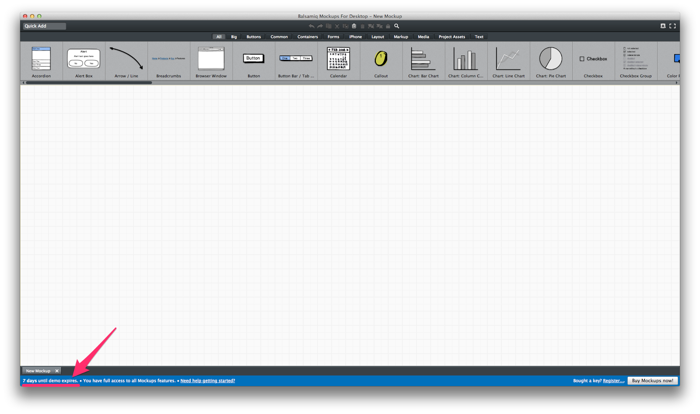
只要花幾分鐘，從上面拉一些元件下來，打幾個字(不打也沒關係，他都有預設的文字)，就可以快速「畫」出一個網站…我實在很喜歡這個 browser window，讓我畫出來的東西突然加了20分….XD
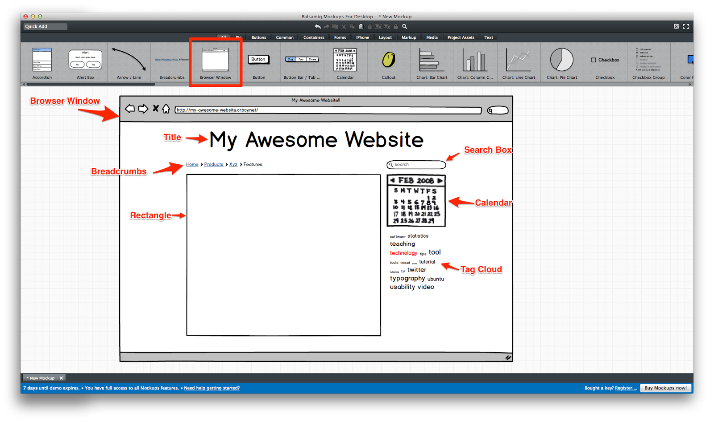
覺得中間的框框實在不太好看…所以就塞了點假文章進去。(我用了一個英文的假文產生器，如果想寫中文的可以參考看看和多的中文假文產生器) 嗯….看起來還算有模有樣呢~
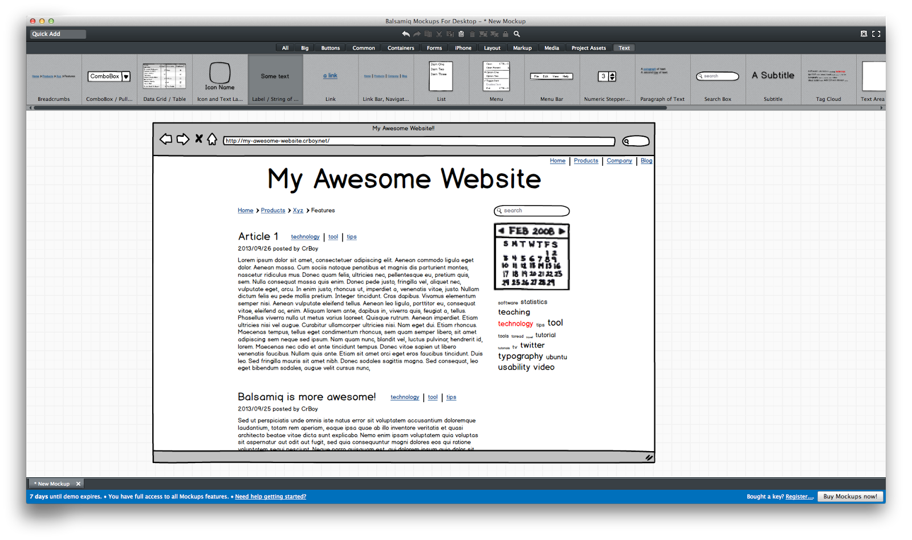
裡面的元件實在太多了，每次都要用選的很麻煩，如果知道大概名字的話，可以透過左上角的 Quick Add 直接搜尋加入
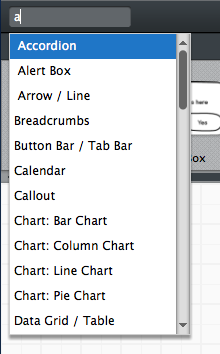
元件中文字的設定也很簡單，常常都是簡單打個字他就會幫你做出想要的東西了，前提當然是元件要用對…每個元件預設都有範例可以依循，所以不用擔心不會打，基本的用法都已經在範例中了！
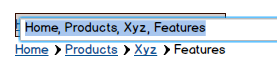
每個元件也都有相關的一些外觀設定可以用，可以隨意玩玩
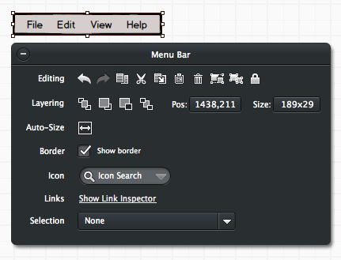
例如這個圖片元件(Image)，預設是一個 placeholder 的角色，但也可以讓你放入真正的圖片在你的 mockup 中
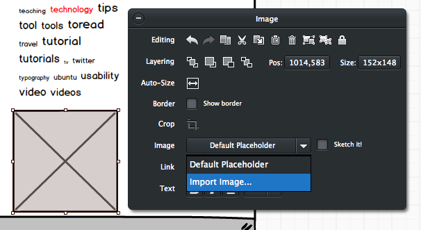
還可以剪裁圖片成你要的樣子
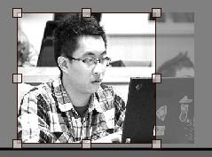
放在畫面中大概就長這樣………XD
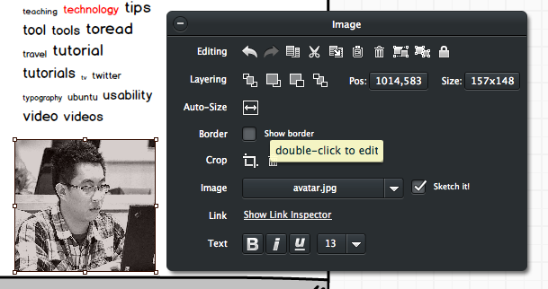
另外 Balsamiq Mockups 也提供 iPhone 的框框，最有趣的是還有 iPhone 4 跟 iPhone 5 可以選XDDDD，當然也有不同方向提供你作設計。
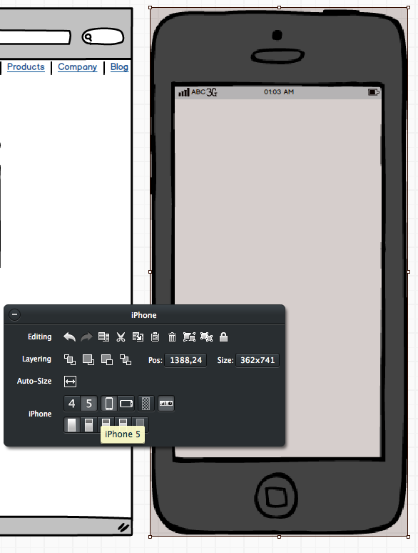
既然有手機元件可以玩，那就自以為很潮的來作個手機版網頁…把旁邊的主要元素複製一份移到手機框框裡面，調整大小之後，就完成了基本的元素！其實就像 RWD 一樣，都是一樣的元素，只是套用了不同 CSS 一樣…然後接著在右上角加個會跳出選單的小 icon，噢，Balsamiq Mockups 提供的 icon 還滿多的，還不賴！
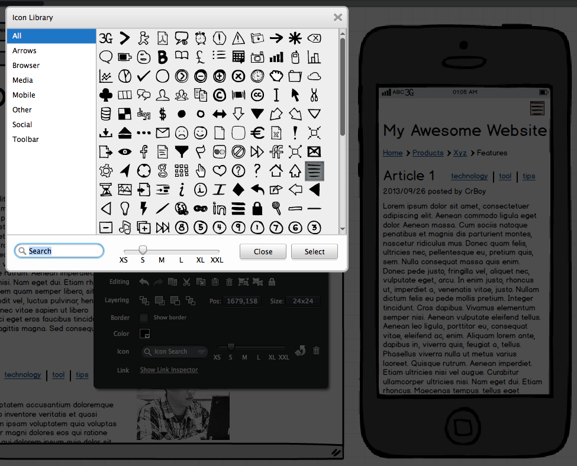
於是乎….就完成了一個看起來好像有模有樣的「網站雛形」。如果要拿來做文件，或是提供給一般人看，其實這樣就可以假裝很威了，哈哈！這些東西做起來花不到 20 分鐘呢~其中還包含慢慢瀏覽有哪些元件可以用的時間。如果用 photoshop 來畫，以我的能力可能要花一整個早上吧….@@
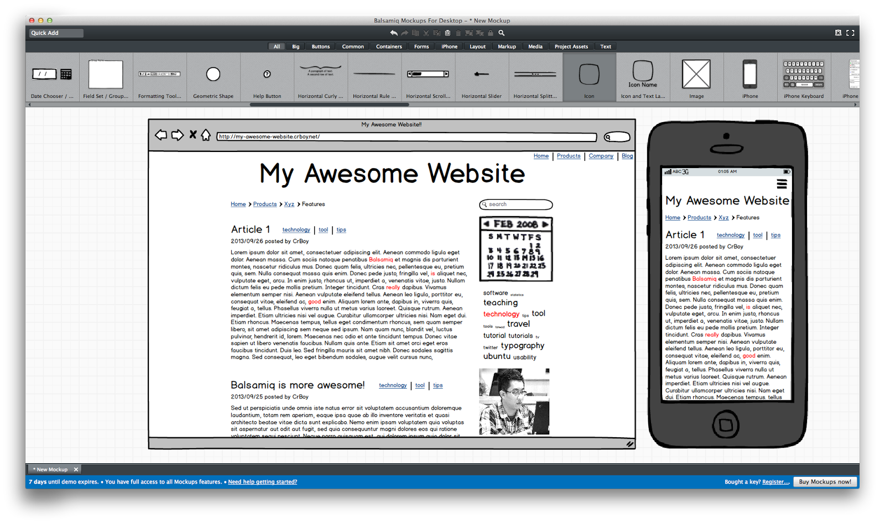
再來是關於中文的問題，以前的版本會無法顯示中文，所以上面的 demo 才會全部都用英文來當範例，結果沒想到，現在的版本已經把中文的問題解決了XD 所以不需要「Use System Font」才能使用中文囉！雖然這字體實在不像英文版這麼可愛….但至少能用啦XD
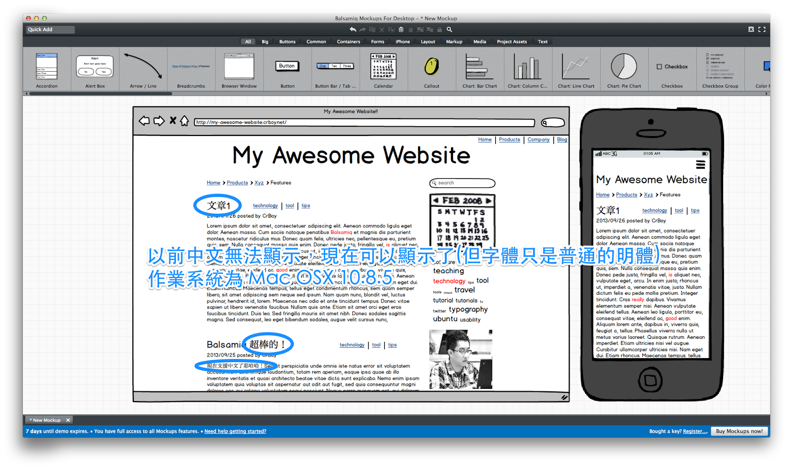
最後，總不能畫完東西只給自己看吧XD Balsamiq Mockups 提供 export 的功能，可以輸出成 PNG 圖檔或是 PDF 檔，當然也可以放進系統剪貼簿或是直接列印出來。
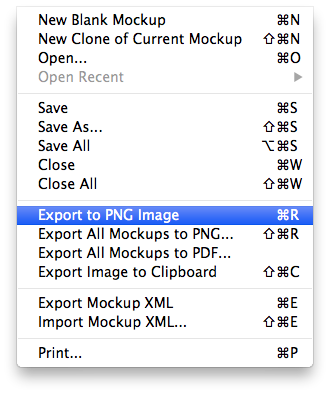
這樣的工具也許有些人(可能是專業設計師或 photoshop 強者)認為沒什麼，但每樣工具都有他不同的目標。Balsamiq Mockups 並沒有辦法用來作各種不同的繪圖，但是他專注於繪製 mockup 這件事上，所以可以讓這件事變得很簡單，門檻很低，特別是對小弟這種美術白癡來說相當受用！不管是網站設計公司、SOHO或是要設計教材之類的用途，都相當實用。推薦~ :P
Last modified on 2013-09-27